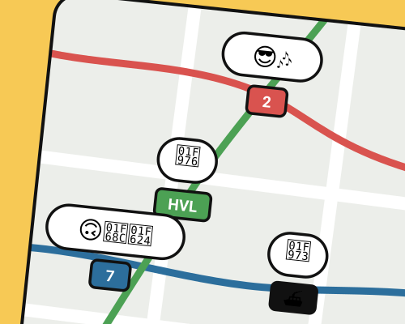

The problem
Wellington's public transport users had no easy way to share real-time feedback about their trip. Crowding, delays and service problems often went unreported, leaving passengers and operators in the dark.
What we found
Interviews with regular commuters and service mapping to find where feedback would be most useful.
- People want to help. Commuters were keen to improve the service, but existing feedback channels took too long.
- It has to fit the commute. Quick, one-handed, done before your stop. Anything slower doesn't happen.

What I did
Made reporting as quick as possible, so people would do it while the trip was still fresh:
- One-tap reports for the common stuff: crowding, delays, cleanliness
- Emoji ratings for fast input
- Route-specific feeds of live reports from other passengers
- Anonymous by default, to keep feedback honest
Result
The prototype showed a new way for passengers to share feedback and help each other decide how to travel, without interrupting their commute.
[ANY TESTING RESULTS? E.G. TIME TO REPORT, TASK SUCCESS]
What I learned
Design for where it's actually used. What works in a usability lab doesn't always work on a crowded bus. Designing inside those limits made a much more useful product.
[NEXT TIME I'D… ONE HONEST THING]